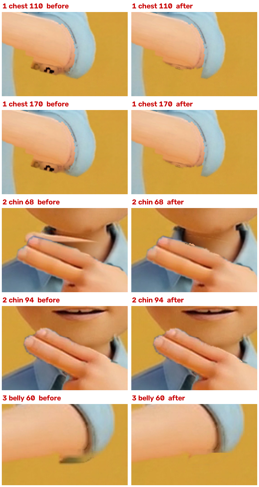
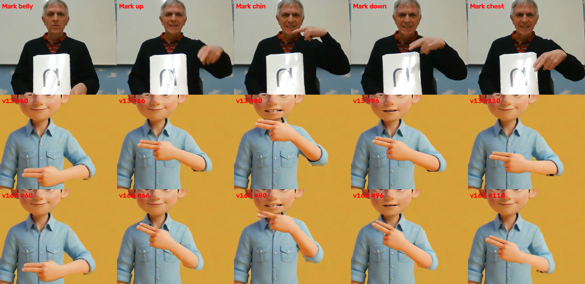

1 · 動画
音を出して、見てください。
名前 → /n/ ×3（10.00秒）確認待ち · 10.0秒・1920×1080・24.0fps・音声あり
作成：フォニ丸pi
PROS PHONICS / 成果物 · N・v16A
蜂谷さんのご依頼（11/7）の版です。v13 の腕の絵を1枚のまま肩を軸に回し、手の高さと速さをマーク先生の n に合わせました。13:40 のご指摘3点（胸の袖口の下、あご下の手のふち、お腹の袖口のしみ）も直しています。音声と口は v13 のままです。
| 文字 | 判定 | 中身 |
|---|---|---|
| N | ○ | 1. 腕が消える・二重・残像・切れ端: 全176コマ（58〜233）で 0 コマ（数値の検査）。 |
| N | ○ | 2. 指: 腕の絵は v13 の指2本がはっきりしたコマ（あご 80・胸 110・お腹 230）を使っています。 |
| N | ○ | 3. あご・顔・体・服・カード: 腕を直した範囲の外は v13 と同じです（mp4 にする前で、違いは 1〜4 画素のコマが数コマだけ）。あごは手の上に重ねています。 |
| N | ○ | 4. 手の高さ: マーク先生と並べた画像のとおりです。あご下は今の高さのまま（蜂谷さんの答えに従い、上げていません）。 |
| N | ○ | 5. 長さ 10.00秒・240コマ。n の口のコマは全部、手があご下にあります。 |
| N | ○ | 6. 1コマで飛ばない: 腕の形が1コマで変わる量の最大は v13 の約半分です。 |
| N | △ | 13:40 のご指摘への直し: ① 胸の絵（110）の肘の下は、肌と袖のいちばん下の線をなめらかにつなぎ、その下にはみ出た肌のかたまりと黒い線の切れ端を外しました（その範囲の黒い画素 62 → 0）。 |
| N | △ | ② あご下の手: 手と指のふち（内側3画素・外側2画素）で、シャツの色が写り込んだ所は後ろの絵に戻し、指の上の黒い細い線は手の色で埋めました。口のすぐ下に残っていた v13 の古い指の線も、腕なしの絵に戻しました（手のまわりのシャツ色のふち 全コマ合計 8688 → 4301 画素）。 |
| N | △ | ③ お腹の袖口の下（x1145〜1215・y674〜694）の灰色のしみを、腕なしの絵のシャツの色に戻しました。はじめの1〜60コマと 224〜240コマにも同じ直しを入れています（しみの画素 全コマ合計 37867 → 4806、60コマ目 365 → 0）。 |
| N | △ | 画像AI・動画AIは使っていません（費用 0ドル）。 |


ご意見は phonics-seisaku チャンネルで @phonimaru-pi を付けて書いてください（例: @phonimaru-pi B の手をもう少しゆっくり）。
N_nancy_noodle_v16a.mp4 sha256 f2d3e11a1bc1